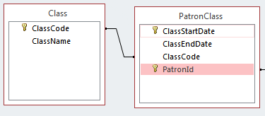

Patron Snapshot Use Case
The Voyager databases maintained by CARLI contain information about patrons at member institutions. These database tables provide current information about patrons, but do not store historical information. In order to analyze patron activity over a long timescale, it is useful to take periodic snapshots and use the information in those snapshots to build reports that show activity over time.
The two tables we're intersted in looking at are the Patron Data table and the Patron Snapshot table.
Looking over the information available in these tables, we can see that the Patron Snapshot table already tracks historical information, so we can probably use it as-is. We can either access the table directly via a linked table (see the section on Importing data in existing databases for more on this), or we can import the data into our local Access database.
The Patron Data table, however, contains a field that may change over time, and we don't have any way of tracking these changes. A patron's department may change one or more times over the period that their snapshot data covers, and if we want to associate the circulation snapshot numbers with a specific department, we need to know the dates range during which the patron was associated with that department.
To do this, we'll add a few new tables to our Access database.
The Patron and PatronSnapshot tables should be fairly self-explanatory. They are simply copies of the tables that exist in the core database. The names of fields are slightly changed to make them easier to understand, but for the most part we can simply copy data directly from the core database to our database if we want to query against it.
The two tables we've added, Department and PatronDepartment, are used to track a patrons department association over time. Since the number of departments at a given institution is relatively small compared to the number of patrons, we'd rather not waste space in our database by duplicating department information in every patron record, so we've added the Department table to store department information. Incidentally, this also makes queries that involve departments perform better, since we will mostly be concerned with the DepartmentId, which is an indexed field.
The table that represents a patron's association with a department is called PatronDepartment (this naming scheme will start to look fairly familiar as you work with the database). There will be a single record in the table for every patron/department association. For example, if a patron was listed in the Math department from 2012 to 2013, and the English department from 2013 to 2014, there would be two records for that patron in the PatronDepartment table. This lets us associate any items loaned to the patron in 2012 with the Math department, and any items in 2013 with the English department.
We can always identify which department the patron is currently associated with, because there will be a record in the PatronDepartment table with no DepartmentEndDate value.
Any piece of information that is associated with a patron, and that changes over time, can be treated this way. Any information to be stored about the patron is put into the "dimension" table (in our examples, Department or Class), and a record tying the patron to the information is put into the "fact" table (PatronDepartment or PatronClass).
For example, if we want to track the classes a patron was taking over time, we can add a table that looks like this:

It should also be noted that there is no identifying information included in the data we're including in our database. We're only interested in looking at the aggregate statistics, and the patronID is simply a convenient way to tie all of the different tables together.